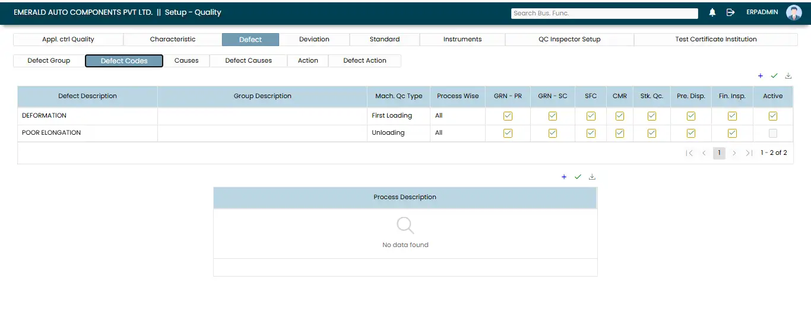

<div data-category="Quality control Management" data-title="Defect code" data-updated="December 01, 2025" data-contributors="RoadmapIT" data-breadcrumb="Home,Quality control Management,Defect code">
  <div class="page-content">
    <p>The defect codes can be defined in this screen. This screen is used to add, modify, and delete defect codes.</p>

    <h5>Navigation Path:</h5>
    <p class="fs-6">Quality Control \ Setup \ Setup - Quality</p>
    
    <!-- Add Defect Code -->
    <h2>Add Defect Code:</h2>
    <ul style="list-style-type: none; align-content: center">
      <li class="mouse-icon">Click the add icon to create a new Defect Code.</li>
      <li class="mouse-icon">Enter the Defect Code Description.</li>
      <li class="mouse-icon">Choose the Group.</li>
      <li class="mouse-icon">Choose the Mach. QC Type.</li>
      <li class="mouse-icon">Enable the required flags if the Defect Code should be used in processes such as PR, SC, SFC, CRM, QC, Stk.QC, and Pre.Disp. Fin.Insp.</li>
      <li class="mouse-icon">
        Click
        <i class="bi bi-check-lg fs-4 mx-1 text-success"></i>
        to save.
      </li>
    </ul>

    <!-- Modify Defect Code -->
    <h2>Modify a Defect Code:</h2>
    <ul style="list-style-type: none; align-content: center">
      <li class="mouse-icon">Only descriptions can be modified.</li>
      <li class="mouse-icon">Click on the Defect Code.</li>
      <li class="mouse-icon">Change the Description.</li>
      <li class="mouse-icon">
        Click
        <i class="bi bi-check-lg fs-4 mx-1 text-success"></i>
        to save.
      </li>
    </ul>

    <!-- Disable Defect Code -->
    <h2>Disable a Defect Code:</h2>
    <ul style="list-style-type: none; align-content: center">
      <li class="mouse-icon">Only unused Defect Codes can be disabled.</li>
      <li class="mouse-icon">Select the Defect Code.</li>
      <li class="mouse-icon">Disable the Active flag.</li>
    </ul>
  </div>
</div>